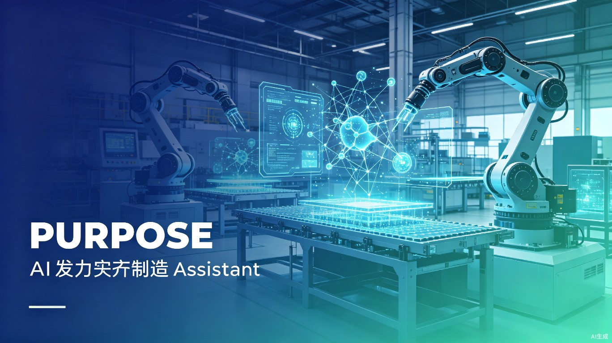

TOPEMS AI 智造助手
制造业一线工人的随身智能导师
说话就能查 · 拍照就能判 · 经验能沉淀

制造业一线工人的随身智能导师
说话就能查 · 拍照就能判 · 经验能沉淀
Problem · 痛点
中国制造业从业人员 3.8 亿，一线工人占比超 60%，但数字化红利与他们无关。
SOP 分散在纸质手册、Excel、老旧系统中，翻找耗时。设备报警时，工人围着机器手足无措。
老师傅的隐性经验"只会在脑子里"，退休后带走。新员工培训周期长，同样的问题反复教。
企业花大价钱上的 ERP/MES 系统，界面复杂、操作繁琐，一线工人根本不会用。
Solution · 解决方案
说话就能查操作 · 拍照就能判质量 · 经验自动沉淀
Positioning · 定位
TOPEMS AI 智造助手是一款面向制造业一线工人的智能助手 Web 应用，基于自然语言对话和图像识别，让工人用最自然的方式获取知识。
Features · 核心功能
自然语言查询设备操作、工艺参数、质量标准。基于企业私有知识库 RAG，答案精准可追溯。
拍摄产品照片，AI 自动识别缺陷并对照标准判定，标记疑似问题提示人工复核。
查询到的操作步骤支持语音播报，解放双手边听边操作，支持倍速和分段重复。
老师傅处理异常后，AI 自动提取关键步骤生成案例，经审核后入库，形成知识闭环。
根据岗位自动生成学习计划，新人完成学习后自动考核，进度与上岗资质挂钩。
Users · 目标用户
30年经验，不太会用智能手机。新设备不会操作，培训记不全。
场景：设备报警时，对着手机说"这个报警怎么处理"，AI语音播报解决步骤。
入职6个月，还在熟悉质量标准。标准书太厚，查起来慢，怕判错。
场景：拍照上传问"这个合格吗"，AI引用标准条款并给出判定建议。
管理15人生产线，每天处理各种异常。同样问题反复发生。
场景：问AI"以前有没有类似情况"，查看历史案例，一键推送给相关工人。
Tech · 技术架构
| 后端 | Rust + Axum，响应 < 100ms |
| 前端 | React + PWA，支持离线 |
| 数据库 | PostgreSQL + pgvector |
| 大模型 | Ollama + Qwen2.5，本地部署 |
| 向量搜索 | Redis HNSW，高性能相似度 |
| 语音识别 | Web Speech API，原生支持 |
Innovation · 四大创新
交互创新
语音优先、大字体、一步直达。让 50 多岁的老师傅也能用 AI。
技术创新
不是通用聊天，是基于企业私有知识库的精准问答，答案附带出处。
模式创新
从"人传人"变为"人传 AI，AI 传人"，解决制造业技能断层难题。
社会创新
让最基层的劳动者也能享受 AI 技术红利，助力产业工人队伍建设。
Market · 市场与商业
Impact · 社会价值
技能提升、工作尊严、安全保障。不再因为"不会用系统"而被边缘化。
培训成本降低 50%，质量成本下降 15-20%，隐性经验显性化。
助力中国制造从"人口红利"向"知识红利"转型，数字普惠最基层劳动者。
Team & Plan · 团队与实施
核心问答功能，支持 1 个设备类型，邀请 3 家企业试用。
AI 问答增加拍照质检、语音播报功能，收集反馈快速优化。
多模态知识沉淀、学习路径功能上线，扩大试用至 10 家企业。
知识闭环UI 优化、性能调优、文档完善，准备比赛 Demo 和路演。
交付团队：产品经理（10年B端经验）+ 技术负责人（Rust专家）+ AI工程师（RAG/向量搜索）+ 行业顾问（30年制造业经验，前CIO）
TOPEMS AI 智造助手 —— 让 AI 成为制造业一线工人的随身智能导师